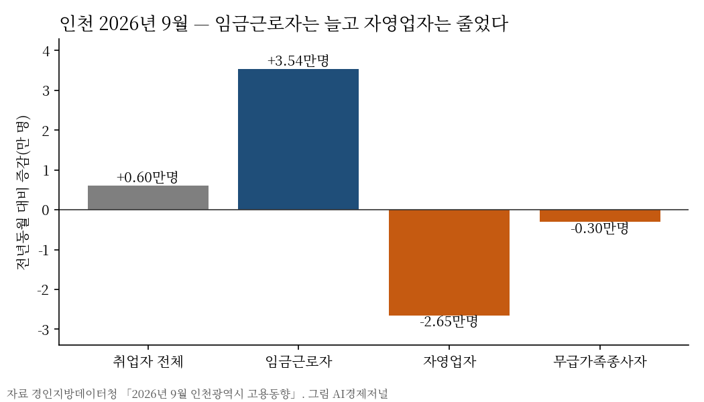

전국 자영업자 늘 때 인천은 2만6500명 줄었다
인천 9월 자영업자 1년 새 8.6% 감소
전국은 늘었지만 숙박·음식점은 줄어
AI경제저널=김갑봉 기자 | 국가데이터처가 4일 낸 8월 비임금근로 부가조사에서 전국 자영업자는 1년 전보다 10만9000명 늘었다. 같은 시기 인천 자영업자는 줄었다.
경인지방데이터청의 9월 인천 고용동향을 보면 인천 자영업자는 28만2300명이다. 1년 전 30만8800명보다 2만6500명(8.6%) 줄었다.
두 통계는 조사 달과 범위가 다르다. 전국 값은 8월 부가조사이고, 인천 값은 9월 고용동향이다. 그래서 두 숫자를 한 줄에 놓고 빼거나 나누지 않는다. 다만 방향은 엇갈렸다.
전국은 고용주와 1인 자영업이 함께 늘었다
전국 비임금근로자는 662만5000명으로 7만1000명 늘었다. 비임금근로자는 자영업자와 무급가족종사자를 합한 말이다. 취업자 가운데 비중은 22.7%다.
고용원이 있는 자영업자는 148만1000명으로 4만7000명 늘었다. 고용원이 없는 자영업자는 430만3000명으로 6만2000명 늘었다. 무급가족종사자 84만1000명은 줄었다.
비임금근로자를 업종별로 보면 도·소매업이 7만5000명, 전문·과학·기술서비스업이 2만5000명 늘었다. 농림어업은 9만4000명, 숙박·음식점업은 4만7000명, 제조업은 3만8000명 줄었다.
최근 1년 안에 사업을 시작한 사람의 70.8%는 자기 사업을 하고 싶어서라고 답했다. 21.7%는 임금근로자로 취업하기 어려워서라고 답했다.
준비 기간은 짧아졌다. 1~3개월 미만 준비하고 문을 연 사람이 47.0%로 1년 전보다 2.2%포인트 늘었다. 준비 기간이 짧아진 흐름은 눈여겨볼 대목이다.
인천은 임금근로자가 늘고 자영업자가 줄었다
인천 9월 취업자는 175만9000명으로 6000명 늘었다. 임금근로자는 144만9600명으로 3만5400명 늘었다. 자영업자 감소 2만6500명이 늘어난 임금 일자리의 4분의 3가량을 상쇄했다.

인천 실업률은 2.4%로 1년 전보다 0.3%포인트 올랐다. 15~64세 고용률은 70.1%로 0.6%포인트 내렸다. 산업별로는 도·소매·숙박·음식점업 취업자가 1만1000명(3.7%) 줄었다.
자영업자 감소가 인천 경제에 말하는 것
자영업자 수가 줄었다는 사실만으로 폐업이 늘었다고 말할 수는 없다. 자영업자가 임금 일자리로 옮겼을 수도 있다. 인천 상용근로자가 3만2700명 늘어난 점은 이 해석에 힘을 싣는다.
그러나 골목 업종이 줄어든 흐름은 전국과 인천이 같다. 전국 숙박·음식점업 비임금근로자가 4만7000명, 인천 도·소매·숙박·음식점업 취업자가 1만1000명 줄었다. 외식과 동네 장사가 먼저 무거워진다.
비용 쪽 압력도 겹친다. 한국은행에 따르면 9월 예금은행 신규 대출금리는 연 4.57%로 올랐다. 2025년 기업생멸행정통계에서 새로 문을 연 기업의 1년 생존율은 63.9%다.
분배로 보면 자영업자 감소는 서민 소득의 감소이기도 하다. 자영업 소득이 줄면 그 돈이 돌던 동네 상권의 수요도 함께 준다. 골목의 매출과 고용이 함께 흔들린다.
인천시는 4일 국회에 지역사랑상품권(인천e음) 국비 259억 원 증액을 요청했다. 동네 가게 매출로 바로 이어지는 돈이다. 자영업자 감소가 그 요청의 근거가 된다.
참고문헌
- 국가데이터처 고용통계과(2026). 2026년 8월 경제활동인구조사 비임금근로 부가조사 결과(보도자료). 2026년 11월 4일. https://www.korea.kr/briefing/pressReleaseView.do?newsId=156787907
- 경인지방데이터청(2026). 2026년 9월 인천광역시 고용동향. 2026년 10월 16일. 인천시 일자리플랫폼 게시. https://www.incheon.go.kr/jobs/main/pst/list.do?pst_id=m_job_trend
- 국가데이터처(2026). 2025년 기업생멸행정통계(잠정) 결과(보도자료). 2026년 10월 22일. https://eiec.kdi.re.kr/policy/materialView.do?num=288411
- 한국은행(2026). 2026년 9월 금융기관 가중평균금리(보도자료). 2026년 10월 29일. https://www.bok.or.kr/portal/main/main.do
- 인천광역시 재정담당관(2026). 인천시, 2027년도 국비 확보 위해 국회 방문 총력 대응(보도자료). 2026년 11월 4일. https://www.incheon.go.kr/IC010205/view?repSeq=DOM_0000000015886684
[사진 출처]
- [사진1] 인천광역시 보도자료 「인천시 삼산농산물도매시장, 추석 맞이 대대적 환경정비 실시」 붙임 사진, 공공누리 출처표시, 2026.9.17., https://www.incheon.go.kr/IC010205/view?repSeq=DOM_0000000015549722
- [도표1] 경인지방데이터청 「2026년 9월 인천광역시 고용동향」 수치로 AI경제저널 작성
관련기사
- 인천시 "국비 1306억 더"…노동감독관 인건비·인천e음·M버스
- [물가] 장바구니 재료값은 내리는데 차림값은 오른다
- 검단 근로자복합문화센터 문 열어…월 1만원 강좌, 평일 밤 9시까지
- 노동교육 필요하다 71.6%…의무교육 빼면 받아 본 사람 8.8%
저작권자 © AI경제저널 무단전재 및 재배포, AI학습 및 활용 금지